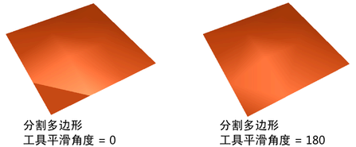
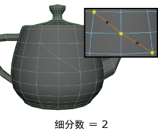

使用这些选项可设置在使用多切割工具时发生的情况。当您选择“网格工具> 多切割”(Mesh Tools > Multi-Cut) >  并单击“建模工具包”(Modeling Toolkit)中的
并单击“建模工具包”(Modeling Toolkit)中的  时，或者从任何组件标记菜单中选择该工具时，“建模工具包”(Modeling Toolkit)中将显示以下选项。有关如何使用该工具的详细信息，请参见使用多切割工具切割面。
时，或者从任何组件标记菜单中选择该工具时，“建模工具包”(Modeling Toolkit)中将显示以下选项。有关如何使用该工具的详细信息，请参见使用多切割工具切割面。
多切割选项
- “捕捉步长 %”(Snap Step %)
- 指定在定义切割点时使用的捕捉增量。默认值为 25%。请参见使用多切割工具将切割点捕捉到边。
切割/插入循环边工具
- 平滑角度(Smoothing angle)
- 指定完成操作后是否自动软化或硬化插入的边。如果将“平滑角度”(Smoothing Angle)设置为 180（默认值），则插入的边将显示为软边。如果将“平滑角度”(Smoothing Angle)设置为 0，则插入的边将显示为硬边。
注： 在场景中看不到“平滑角度”(Smoothing Angle)的效果。
- 边流(Edge Flow)
- 启用后，新边遵循周围网格的曲面曲率。请参见编辑边流。
- 细分(Subdivisions)数
- 指定沿已创建的每条新边出现的细分数目。顶点将沿边放置，以创建细分。
在预览模式中，这些顶点是黑色的，从而帮助您区分切割点和细分。
请参见使用多切割工具切割面。
切片工具
除了默认多切割行为，可以通过按 Shift 键并拖动面来激活“切片工具”(Slice Tool)。有关更多信息，请参见使用多切割工具对面进行切片。
- 忽略背面(Ignore Backfaces)
- 删除面(Delete Faces)
- 删除切片平面一侧的曲面部分。
- 提取面(Extract Faces)
- 断开切片平面一侧的面。在“提取面”(Extract Faces)字段中输入值可以控制提取的方向和距离。
- 沿平面切片(Slice Along Plane)
- 沿指定平面对曲面进行切片：“YZ”、“ZX”或“XY”。
请参见使用多切割工具对面进行切片。
颜色设置(Color Settings)
可以自定义“直线”(Line)、“顶点”(Vertex)、“边点”(Edge Point)和“面点”(Face Point)颜色。
激活约束选项(Live Constraint Options)
四边形绘制工具选项(Quad Draw Tool options)中的“激活约束选项”(Live Constraint Options)。